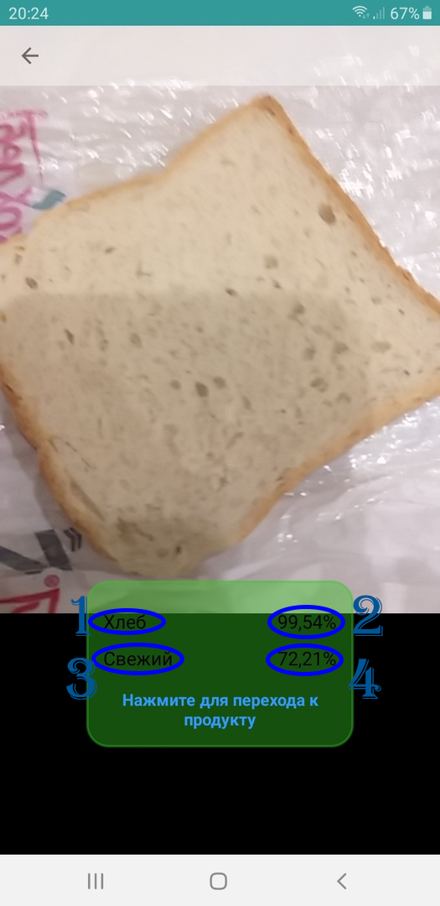

This manual will explain how to use the food freshness recognizer.
To use freshness recognition in the main menu, select "Freshness Recognition". In the screen that opens, the image transmitted from the camera and a window with recognition information are displayed. When you hover over a known product program
the window displays information:
- Product Name (1 in the screenshot)
- Probability that this is the same product (2 in the screenshot). With a probability of 60%, we can assume that this is the same product.
- Fresh or not fresh product (3 in the screenshot)
- The probability that freshness is valid (4 in the screenshot). From 60% it can be considered that freshness is valid

The color of the window can determine the freshness of the product:
- If the window is yellow and it says "Unknown product" - this means that the product has not been defined and it is not possible for it to determine freshness. Below you can see a screenshot.
- If the window is red, the product is spoiled or not fresh.
- If the window is green, the product is fresh and not spoiled.
If the product has been determined, then you can go to additional information on how to determine the freshness of the product by clicking on the window.